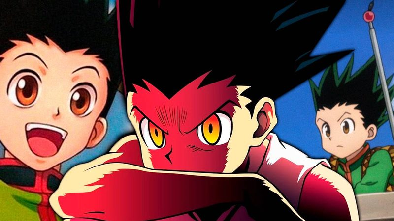

Jajanken
Gon Freecss's honest game, aura, a declared choice, and a fist that means it. Rock is a charging punch that grows the longer you dare to stand still and glowing; Paper is the same conviction thrown across the room as projected aura; Scissors is aura transmuted to a blade's edge. You always say which one is coming, out loud. That's the whole trick: they know, and it doesn't help.

Jajanken
"First comes rock!" The technique answers: then rock it is.
Feature map
Level-by-level features
Field notes. Subject: a child’s game, played lethally. I have watched this technique and come away with three truths. First, it announces itself: the user must declare “Jajanken… Rock!” aloud, stand glowing and still, speed halved, attacks against him advantaged, and tell everyone exactly what is coming. Deception is not merely absent; it is structurally impossible. Second, honesty has three forms, and no more: Rock is weight charged into a fist, Paper is conviction thrown sixty feet, Scissors is aura honed to an edge, a complete doctrine with no fourth option. Third, and heaviest: there is no Domain here, and there was never going to be. When everything was on the line, the user spent his future instead. The technique’s true pinnacle is not a barrier but a vow, the future, spent. Hence the maxim: the honest fist needs no hiding place.
Rock, Charging Fist
Action · Plant your feet and declare "Jajanken… Rock!" aloud: gain 1 charge (max 3) · While charging: speed halved, attacks against you have advantage · Release as part of the Attack action: unarmed strike, on hit 2d12 bludgeoning + 2d12 per charge held (charges spent) · Charge fizzles if unused for 1 minute.
The core of the game, and the dossier names it plainly: Enhancer aura packed into one honest fist. Note the price of honesty. You are standing still, glowing, telling everyone exactly what is coming, and the punch is devastating anyway.
Release. Simple. Devastating. Announced.
Paper
Action · 1 CE · Declare "Paper!": ranged CE attack, range 60 ft · On hit: 3d8 bludgeoning · Ignores half cover.
Emission, the same conviction, thrown across the room. Paper needs no charge and no stillness, it is the answer for the enemy who will not come to you. Rock is honest. Paper is honest at a distance.
Scissors
As part of the Attack action · 1 CE · Declare "Scissors!": melee unarmed strike dealing 3d8 slashing damage.
Transmutation, aura honed to an edge. Precise where Rock is heavy, it scores, it doesn’t crush. Three choices. No bluffs.
Held Gambit
Reaction · While holding a Rock charge, when a creature enters your reach or hits you with a melee attack: release the charge and resolve the Rock strike against that creature immediately (charge spent).
He has learned to hold the punch, not just throw it. A declared fist is also a loaded trap.
Crater
Passive · Rock charge cap rises to 6 · When you release Rock with 4+ charges: each creature within 10 ft of the target (other than you): Str save vs your CE save DC or take half the Rock's total damage and be knocked prone (no damage on success).
A fully honest punch shakes the ground with it. The fist was never aimed at one man alone. The fist lands once. The ground lands twice.
Everything I Have
Once per long rest · Bonus action · For 1 minute: charging Rock becomes a bonus action, Paper and Scissors cost no CE, holding a charge no longer halves your speed or grants attackers advantage · When it ends: your CE pool empties to 0 and you cannot spend or regain CE until a long rest.
Once per long rest, for one minute, the charge takes no time. Mark the price that follows. This is not a technique feature. It is a down payment on a vow. Gon gave everything for one fight, once. The technique remembers the price.
Maximum and Vow.
Capstone material
Maximum: All-In Rock
Action · 8 CE · Declare your target aloud · Treated as holding 6 charges · Unarmed strike with advantage: on hit 12d12 bludgeoning, and the target Str save vs your CE save DC or be pushed 30 ft and knocked prone · Structures and objects take double damage.
The ultimate expression of Rock: everything, one fist, announced. Maximum techniques announce themselves; this one announces itself twice. You cannot whisper a Maximum.
Forbidden Vow: The Future, Spent
May be sworn once (GM must approve the moment of desperation) · Bonus action · For 1 minute: your level counts as 20 for all Jajanken features, charging Rock costs no action, Paper and Scissors cost no CE, Jajanken attacks crit on 18–20 · When it ends: Jajanken leaves you entirely (features, Maximum, feats) — only story-scale atonement restores it.
The dossier says it outright: Jajanken has no Domain. When everything was on the line, the user spent his future instead. Classify this correctly: a missing Domain is the norm; a spent future is the exception, and it is priced accordingly.
You may swear it once, and only if you truly mean it. It cannot be sworn for convenience.
When the minute ends, the price comes due: Jajanken leaves you entirely. Only story-scale atonement (a wish, divine intervention, or a GM-built quest) can bring it back. Gon gave everything for one fight, once. The technique remembers the price, and so will you.
Five feats, declared aloud.
Jajanken's feats are new applications of the three choices, each is optional, and you must meet its listed prerequisite before taking it.
Ground Slam
Sometimes the honest target is the floor. You may release a Rock charge downward instead of at a creature: each creature within 15 feet of you must succeed on a Strength saving throw against your CE save DC or take the Rock's damage and be knocked prone (half damage on a success, no prone). The charge is spent. Sometimes the honest target is the floor.
Signal Paper
Subtlety was never part of the game. You may fire Paper straight into the sky as a signal instead of an attack: a palm of aura visible for miles in daylight, farther at night, shaping one short word if you form it. It deals no damage. Gon never needed subtlety.
Sunder
The edge that scores can also sever. When you strike with Scissors, you may forgo damage to cut instead: destroy one nonmagical object the target holds or wears, a rope, a weapon, a strap, a mask. Against bindings or restraints worn by someone else, this works provided you can reach them.
Aftershock
The punch doesn’t stop at the first body. When your released Rock hits, you may spend 1 CE to drive the shockwave through: choose one creature directly behind the target within 15 feet, it must succeed on a Dexterity saving throw against your CE save DC or take half the Rock's damage. The punch doesn't stop at the first body.
Paper Mine
Even an honest game has traps. As an action, spend 1 CE to press a Paper charge into an object you touch: the next creature to pick up or handle the object triggers the blast (Dexterity saving throw against your CE save DC; 3d8 bludgeoning on a failure, half on a success). The mine lasts 1 hour or until triggered. Even an honest game has traps.
Edge cases and shared systems.
Campaign canon notes